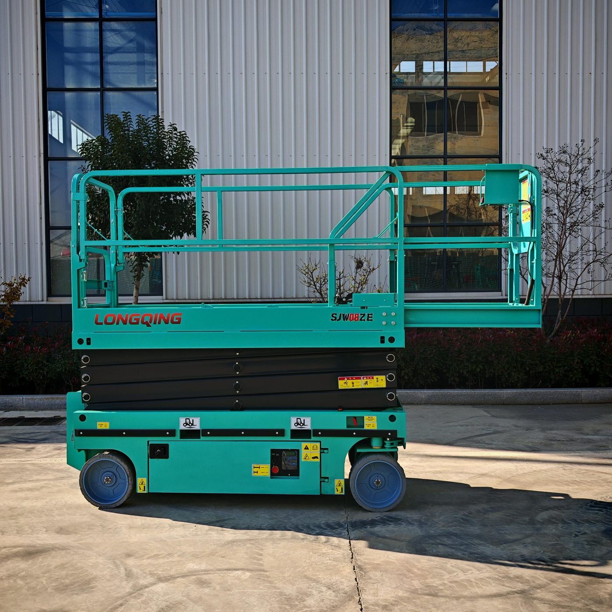
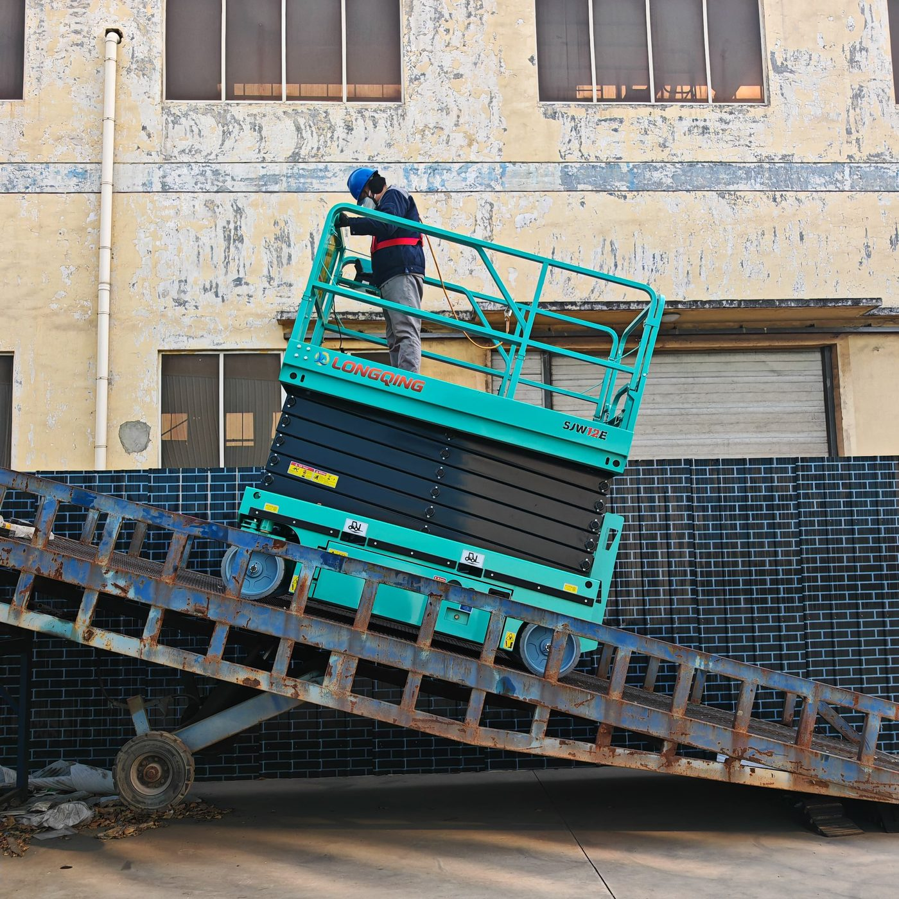

Самоходные ножничные подъёмные платформы Longqing SJW3.5E–SJW14E
Официальный поставщик в России — ООО «ВИРА». Сертификация CE и EAC, гарантия 18 месяцев, отгрузка из Владивостока и доставка по всей России.


Самоходные ножничные платформы Longqing серии SJW — самая востребованная линейка каталога: девять электрических моделей с рабочей высотой от 5,6 до 15,8 м. Ножничный механизм поднимает платформу строго вертикально, поэтому машины этой серии применяются для монтажа потолков и коммуникаций, обслуживания складских стеллажей, отделки фасадов и интерьеров. Управление пропорциональное, движение возможно на полной высоте, у большинства моделей есть выдвижная платформа, расширяющая рабочую зону.
Серия делится на три группы: компактные SJW3.5E/SJW4.6E/SJW0606E (вес 780–1450 кг) для стеснённых помещений, средние SJW06E/SJW8E/SJW08BE (высота 8–10 м) и полноформатные SJW10E/SJW12E/SJW14E с рабочей высотой 12–15,8 м. Все машины — с электроприводом, нулевым выбросом и опциональными бесследными шинами, что позволяет работать на эпоксидных и полимерных полах. Безопасность: автоматическая тормозная система, защита от провала колёс, аварийное опускание, кнопка экстренной остановки.
Модельный ряд — 9 моделей
- SJW3.5E — рабочая высота 5,6 м, вес 780 кг, электропривод
- SJW4.6E — рабочая высота 6,6 м, вес 830 кг, электропривод
- SJW0606E — рабочая высота 7,8 м, вес 1450 кг, электропривод
- SJW06E — рабочая высота 8 м, вес 1930 кг, электропривод
- SJW8E — рабочая высота 10 м, вес 2090 кг, электропривод
- SJW08BE — рабочая высота 10 м, вес 2108 кг, электропривод
- SJW10E — рабочая высота 12 м, вес 2400 кг, электропривод
- SJW12E — рабочая высота 13,85 м, грузоподъёмность 320 кг, вес 2850 кг, электропривод
- SJW14E — рабочая высота 15,8 м, вес 3616 кг, электропривод
Особенности и системы безопасности
- Автоматическая система торможения
- Пропорциональное управление
- Звуковой зуммер
- Выдвижная платформа
- Автоматическая система защиты от ям
- Система аварийного опускания
- Звуковой сигнал
- Система защиты зарядки
- Самозакрывающаяся дверь платформы
- Кнопка экстренной остановки
- Счетчик времени работы
- Движение на полной высоте
- Система защиты гидравлических шлангов от разрыва
- Опорный стержень для безопасного обслуживания
- Бесследные шины
- Система диагностики неисправностей
- Стандартные отверстия для вилочного погрузчика
- Привод 4×2
- Система защиты от наклона
- Складные ограждения
Технические характеристики
Полные заводские параметры по каждой модели серии. Цену и срок поставки уточняйте у ООО «ВИРА» — +7 (423) 256-47-21.
| Модель | SJW3.5E | SJW4.6E | SJW0606E |
|---|---|---|---|
| Максимальная рабочая высота | 5,6 м | 6,6 м | 7,8 м |
| Максимальная высота платформы | 3,5 м | 4,6 м | 5,8 м |
| Безопасная рабочая нагрузка | 240 кг | 200 кг | 230 кг |
| Безопасная рабочая нагрузка выдвижной платформы | 115 кг | 115 кг | 110 кг |
| Размеры рабочей платформы (Д×Ш×В) | 1,37×0,716×1,23 м | 1,37×0,716×1,23 м | 1,68×0,74×1,1 м |
| Общие размеры (Д×Ш×В / ограждение не сложено) | 1,483×0,83×2,01 м | 1,483×0,83×2,11 м | 1,86×0,8×2,16 м |
| Общие размеры (Д×Ш×В / ограждение сложено) | 1,483×0,83×1,65 м | 1,483×0,83×1,74 м | 1,86×0,8×1,755 м |
| Размер выдвижения платформы | 0,6 м | 0,6 м | 0,9 м |
| Минимальный дорожный просвет (защита от ям / убрана) | 33/55 мм | 33/55 мм | 0,1/0,02 м |
| Колесная база | 1,138 м | 1,138 м | 1,43 м |
| Радиус поворота (внутреннее колесо) | 0,45 м | 0,45 м | 0,3/1,75 м |
| Подъемный двигатель | DC24V/1,2 кВт | DC24V/1,2 кВт | 24V/3,3 кВт |
| Ходовой двигатель в сборе | DC24V/0,45 кВт | DC24V/0,45 кВт | — |
| Время подъема/опускания (сек) | 35/40 | 35/40 | 16/28 |
| Скорость движения машины (в сложенном состоянии) | 3,5 км/ч | 3,5 км/ч | 3,8 км/ч |
| Скорость движения машины (в поднятом состоянии) | 0,8 км/ч | 0,8 км/ч | 0,8 км/ч |
| Аккумуляторная батарея | 2×12V/100Ah | 2×12V/100Ah | 4×6V/200AH |
| Зарядное устройство | 24V/15A | 24V/15A | 24V/30A |
| Максимальная способность преодоления подъемов | 25% | 25% | 25% |
| Максимально допустимый угол при работе | 1,5°/3° | 1,5°/3° | 1,5°/3° |
| Шины | Φ280×76 мм | Φ280×76 мм | Бесследные цельные Φ305×100 мм |
| Общий вес машины | 780 кг | 830 кг | 1450 кг |
| Модель | SJW06E | SJW8E | SJW08BE |
|---|---|---|---|
| Максимальная рабочая высота | 8 м | 10 м | 10 м |
| Максимальная высота платформы | 6 м | 8 м | 8 м |
| Безопасная рабочая нагрузка | 450 кг | 450 кг | 320 кг |
| Безопасная рабочая нагрузка выдвижной платформы | 110 кг | 110 кг | 110 кг |
| Размеры рабочей платформы (Д×Ш×В) | 2,264×1,13×1,2 м | 2,264×1,13×1,2 м | 2,273×0,81×1,2 м |
| Общие размеры (Д×Ш×В / ограждение не сложено) | 2,49×1,182×2,175 м | 2,49×1,182×2,305 м | 2,477×0,85×2,325 м |
| Общие размеры (Д×Ш×В / ограждение сложено) | 2,49×1,182×1,65 м | 2,49×1,182×1,78 м | 2,477×0,85×1,846 м |
| Размер выдвижения платформы | 0,9 м | 0,9 м | 0,9 м |
| Минимальный дорожный просвет (защита от ям / убрана) | 0,1/0,02 м | 0,1/0,02 м | 0,1/0,02 м |
| Колесная база | 1,90 м | 1,90 м | 1,90 м |
| Радиус поворота (внутреннее колесо) | 0/2,35 м | 0/2,35 м | 0/2,35 м |
| Подъемный двигатель | 24V/3,3 кВт | 24V/3,3 кВт | 24V/3,3 кВт |
| Ходовой двигатель в сборе | — | — | — |
| Время подъема/опускания (сек) | 35/40 | 35/40 | 31/40 |
| Скорость движения машины (в сложенном состоянии) | 3,5 км/ч | 3,5 км/ч | 3,5 км/ч |
| Скорость движения машины (в поднятом состоянии) | 0,8 км/ч | 0,8 км/ч | Нет |
| Аккумуляторная батарея | 4×6V/200Ah | 4×6V/200Ah | 4×6V/200Ah |
| Зарядное устройство | 24V/30A | 24V/30A | 24V/30A |
| Максимальная способность преодоления подъемов | 25% | 25% | 25% |
| Максимально допустимый угол при работе | 1,5°/3° | 1,5°/3° | 1,5°/3° |
| Шины | Φ381×127 мм | Φ381×127 мм | Φ381×127 мм |
| Общий вес машины | 1930 кг | 2090 кг | 2108 кг |
| Модель | SJW10E | SJW12E | SJW14E |
|---|---|---|---|
| Максимальная рабочая высота | 12 м | 13,85 м | 15,8 м |
| Максимальная высота платформы | 10 м | 11,85 м | 13,8 м |
| Безопасная рабочая нагрузка | 320 кг | 320 кг | 230 кг |
| Безопасная рабочая нагрузка выдвижной платформы | 110 кг | 110 кг | 110 кг |
| Размеры рабочей платформы (Д×Ш×В) | 2,264×1,13×1,2 м | 2,264×1,13×1,2 м | 2,636×1,13×1,2 м |
| Общие размеры (Д×Ш×В / ограждение не сложено) | 2,49×1,182×2,435 м | 2,49×1,182×2,565 м | 2,85×1,405×2,58 м |
| Общие размеры (Д×Ш×В / ограждение сложено) | 2,49×1,182×1,91 м | 2,49×1,182×2,04 м | 2,85×1,405×2,05 м |
| Размер выдвижения платформы | 0,9 м | 0,9 м | 0,9 м |
| Минимальный дорожный просвет (защита от ям / убрана) | 0,1/0,02 м | 0,1/0,02 м | 0,1/0,02 м |
| Колесная база | 1,90 м | 1,90 м | 2,24 м |
| Радиус поворота (внутреннее колесо) | 0/2,35 м | 0/2,35 м | 0/2,5 м |
| Подъемный двигатель | 24V/4,5 кВт | 24V/4,5 кВт | 24V/4,5 кВт |
| Ходовой двигатель в сборе | — | — | — |
| Время подъема/опускания (сек) | 58/48 | 65/60 | 80/65 |
| Скорость движения машины (в сложенном состоянии) | 3,5 км/ч | 3,5 км/ч | 3,5 км/ч |
| Скорость движения машины (в поднятом состоянии) | 0,8 км/ч | 0,8 км/ч | 0,8 км/ч |
| Аккумуляторная батарея | 4×6V/200Ah | 4×6V/200Ah | 4×6V/225Ah |
| Зарядное устройство | 24V/30A | 24V/30A | 24V/30A |
| Максимальная способность преодоления подъемов | 25% | 25% | 25% |
| Максимально допустимый угол при работе | 1,5°/3° | 1,5°/3° | 1,5°/3° |
| Шины | Φ381×127 мм | Φ381×127 мм | Φ381×127 мм |
| Общий вес машины | 2400 кг | 2850 кг | 3616 кг |
Частые вопросы о технике Longqing
Какая рабочая высота у ножничных платформ Longqing SJW?
От 5,6 м (SJW3.5E) до 15,8 м (SJW14E). Промежуточные модели: SJW4.6E — 6,6 м, SJW0606E — 7,8 м, SJW06E — 8 м, SJW8E и SJW08BE — 10 м, SJW10E — 12 м, SJW12E — 13,85 м.
Можно ли работать платформой SJW в помещении?
Да. Все модели серии электрические: нулевой выброс, низкий уровень шума, опциональные бесследные шины для чистовых полов. Компактные модели SJW3.5E–SJW0606E весят 780–1450 кг и рассчитаны на склады, цеха и торговые центры.
Что даёт выдвижная платформа?
Выдвижная секция увеличивает рабочую зону без изменения габаритов машины: оператор может дотянуться до точки за краем платформы. В списке опций серии также складные ограждения и отверстия для вилочного погрузчика для удобства перемещения.
Подберём модель под вашу задачу
Расскажите об объекте, высоте и условиях работ — предложим подходящую модель Longqing, рассчитаем доставку из Владивостока в ваш регион.